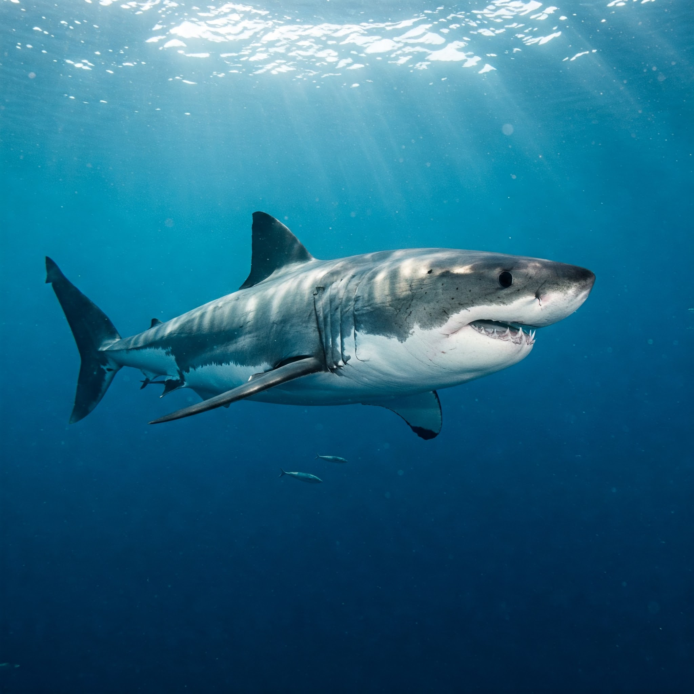
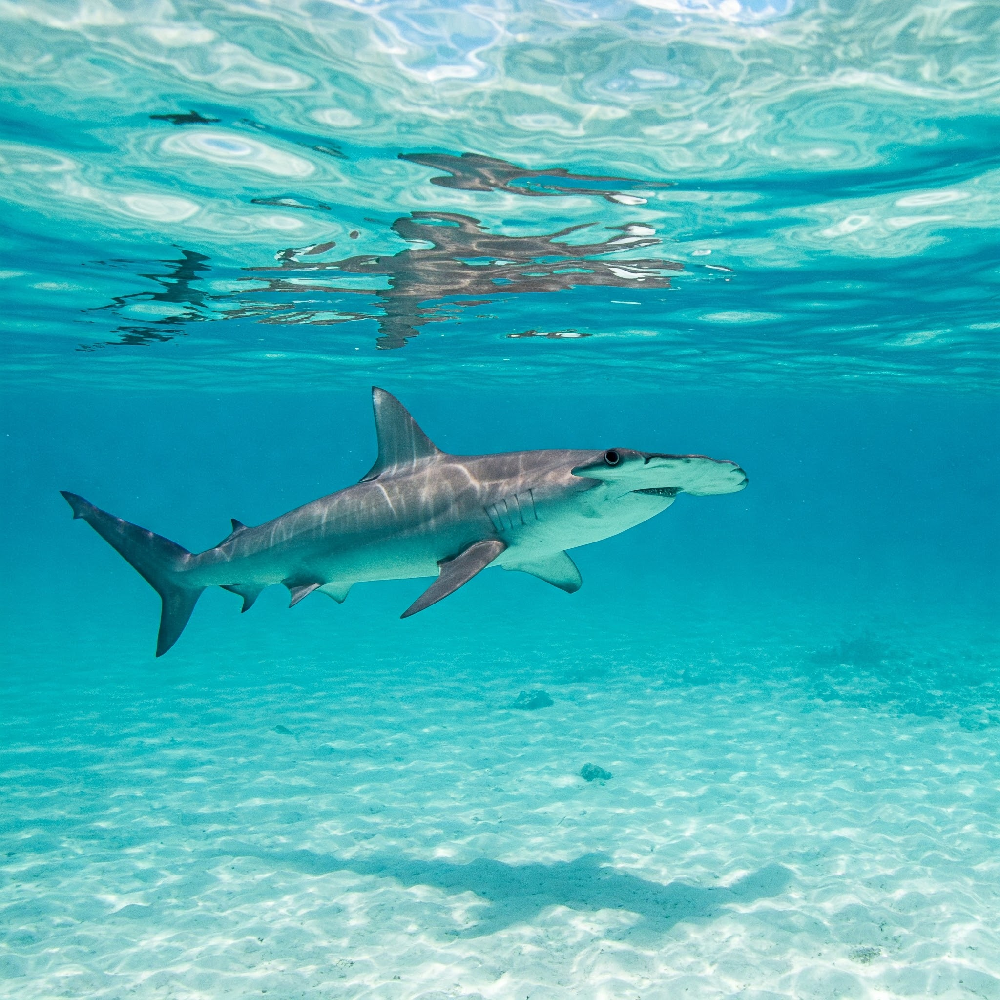
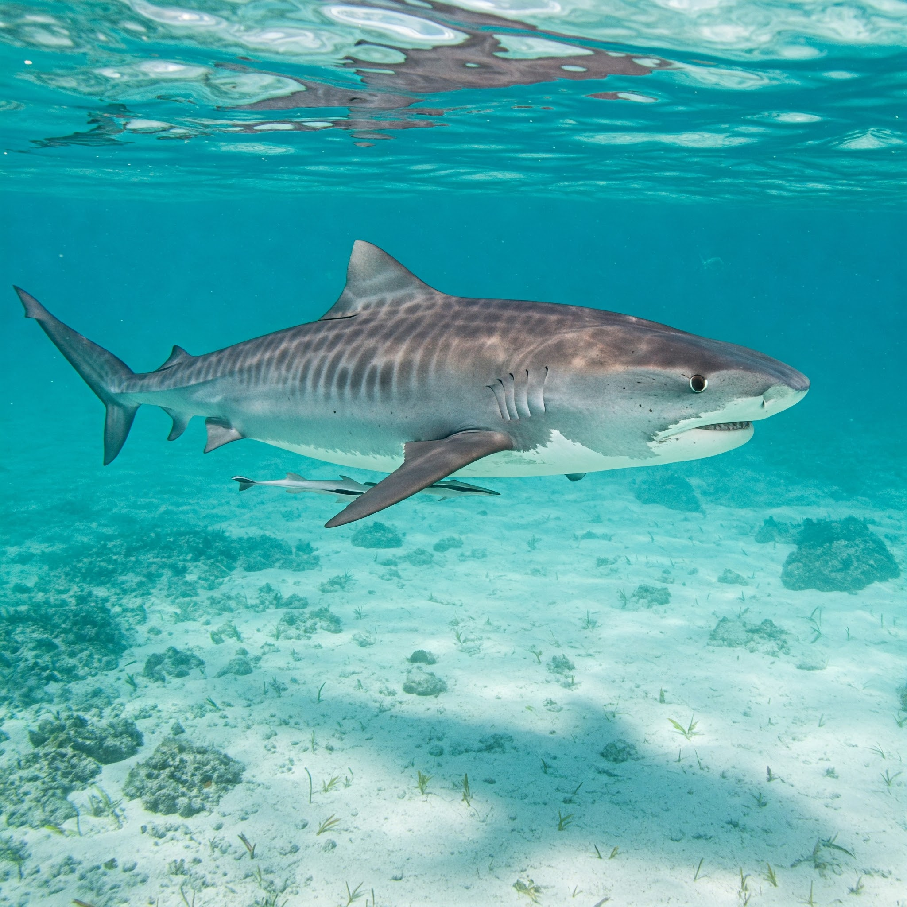
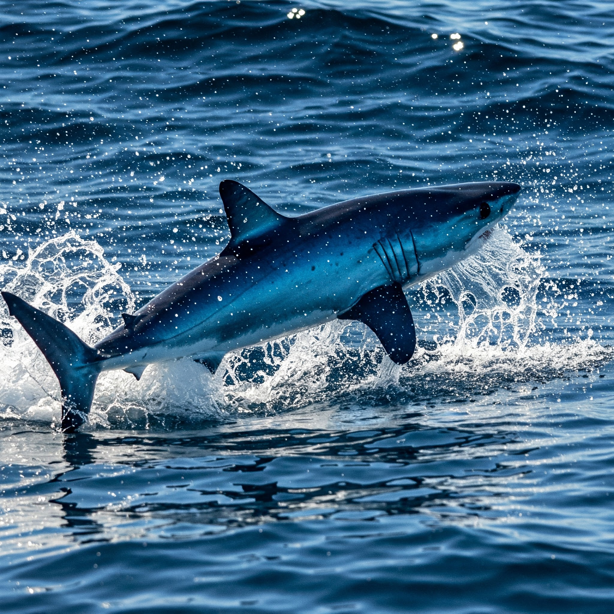

Descubra as várias espécies de tubarões e suas particularidades.
Entenda os hábitos e o comportamento desses predadores.
Aprenda sobre as iniciativas de preservação e a importância dos tubarões para o ecossistema.




• Os tubarões existem há mais de 400 milhões de anos, superando até os dinossauros.
• Algumas espécies conseguem detectar uma gota de sangue na água a quilômetros de distância.
• O papel dos tubarões é fundamental para o equilíbrio dos ecossistemas marinhos.
"Os tubarões são essenciais para manter a saúde dos oceanos."
"Conhecer mais sobre esses animais nos ajuda a preservar nossos mares."